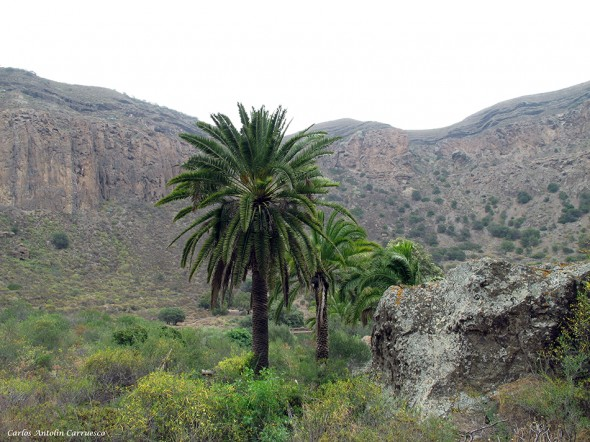

Bandama
Camino del Fondo
El sendero que desde las Casas de la Caldera baja a las Casas del Fondo, en el interior de la Caldera es el itinerario mas transitado de la Caldera, recientemente acondicionado y dotado de miradores con paneles explicativos
El itinerario comienza en las Casas de la Caldera junto a la ermita y una vez traspasada su elegante cancela de hierro. Nada mas iniciarse el sendero que aparece enlosado y escalonado, pasa por la Hoyetas mirador natural dotado de paneles y mesa interpretativa. El sendero continua la bajada con amplios serpenteos por la ladera suroeste del Pico y La Caldera, ahora sobre picón, pasando junto a un segundo mirador, llamado de El Cornical.
El desnivel es moderado y en algunos tramo algo pendiente (14%) exigiendo al caminante un cierto esfuerzo en la subida y cierta precaución en la bajada pues a la inclinación del sendero se une las características del terreno, en general de picon, que en algunas trecho es una fina capa sobre terreno mas duro en el que es fácil resbalar.
El sendero continua su bajada en continuos serpenteo y alternado tramos escalonados con tramos o sobre roca o picón haciendose menos pendiente según se acerca a su final, en las casas del Fondo.
Tiempo estimado:1 Hora y 22 minutos